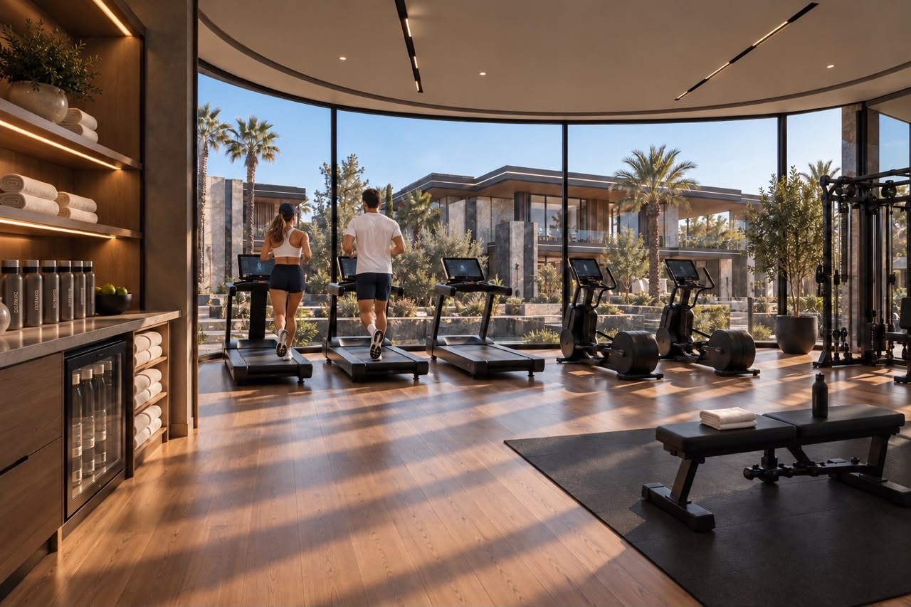
Fitnessruimte voor bewoners
Een ruimte voor sport en welzijn, met zicht op de tuinen van het domein.
In Marrakech verenigt Domaine Red Stone 41 privévilla’s op een domein van 8,9 hectare. Tuinen, zwembaden en hedendaagse architectuur vormen een leefomgeving gericht op buitenleven.
Ontdek het project
Een landschapspark van meer dan 4.000 m² vormt een aanvulling op de privétuinen van de villa’s. Een gezamenlijke plek om met het gezin samen te komen, van het buitenleven te genieten en de natuur volop ruimte te geven in Domaine Red Stone.
Ontdek de recreatieruimtes →De beelden op deze website worden ter illustratie getoond en zijn niet-contractueel.
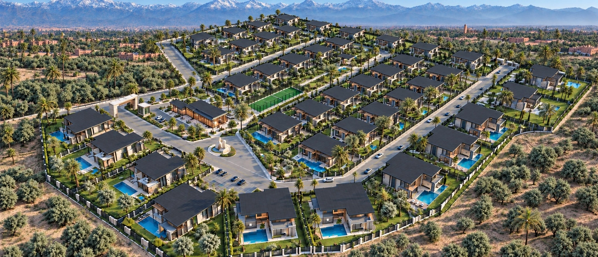
Ontdek Domaine Red Stone en zijn meer dan 4.000 m² aan groene ruimtes.
Vergroot het planDe beelden op deze website worden ter illustratie getoond en zijn niet-contractueel.

Overzichtsplan van het domein: de collecties Chloé, Céline en Margaux, gemeenschappelijke diensten en de zone met padelbanen en kinderpark. Het originele overzichtsplan blijft behouden.
De beelden op deze website worden ter illustratie getoond en zijn niet-contractueel.
Een eigen plek, met Marrakech aan de horizon. Bekijk de ligging van Domaine Red Stone op onze kaart.
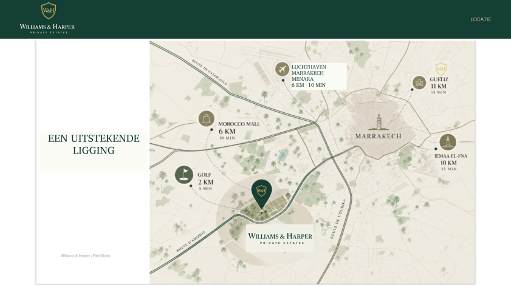
Ligging: Domaine Red Stone, Route d’Amizmiz, km 7, Marrakech. De markering van Williams & Harper geeft het domein aan.
Domaine Red Stone · Route d’Amizmiz, km 7 · Klik op de kaart om deze te vergroten. · De beelden op deze website worden ter illustratie getoond en zijn niet-contractueel.
Ruimtes en diensten om van het domein te genieten, momenten met het gezin te delen en tijd voor uzelf te nemen.
Een gelijkvloers clubhuis brengt Red Coffee met zijn ruime terras, de conciërgeservice, de stomerij, de buurtwinkel en de fitnessruimte samen. Aan de achterzijde ligt een groene parkeerzone aan de kant van de padelbanen.


Architectuurvoorstellen ter illustratie, niet contractueel bindend. Selecteer een afbeelding om deze te vergroten. · De beelden op deze website worden ter illustratie getoond en zijn niet-contractueel.
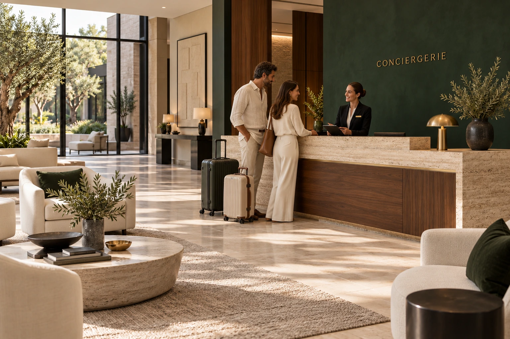
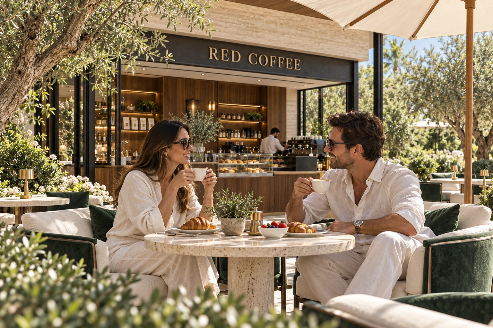
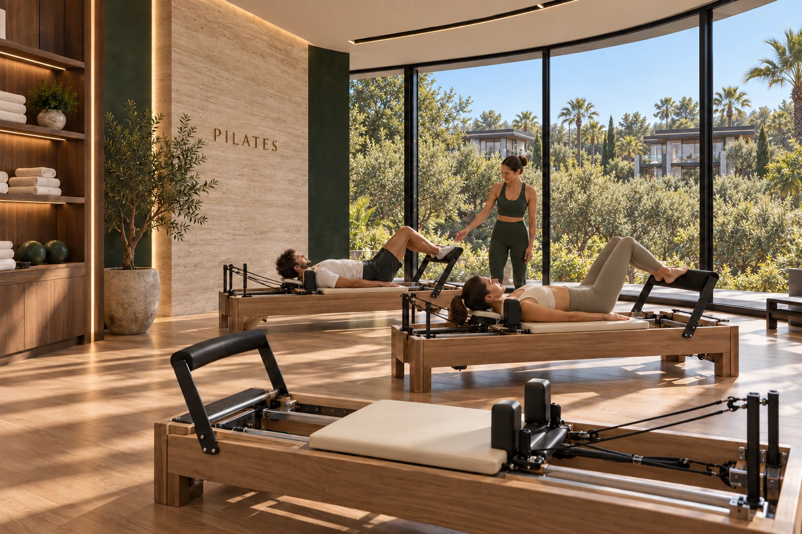
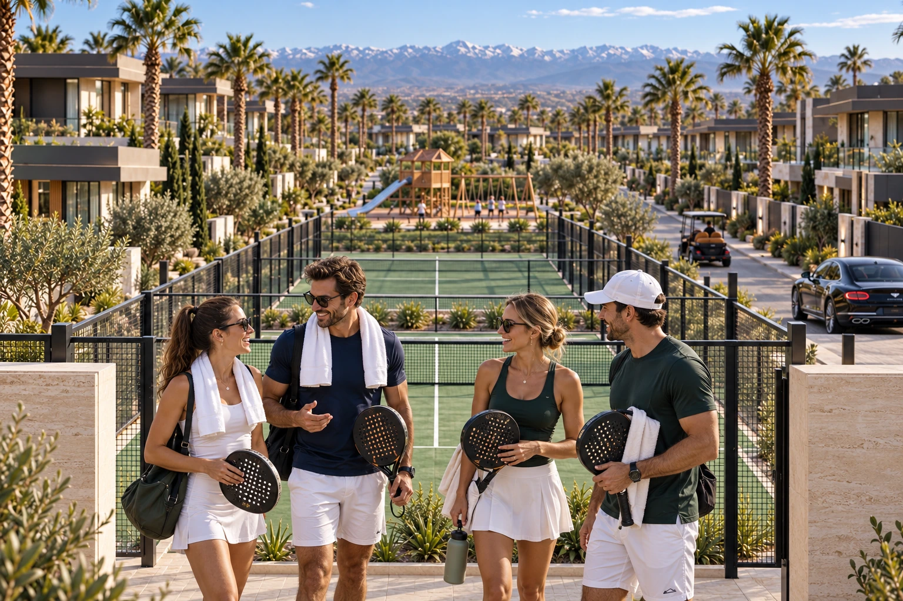
De beelden op deze website worden ter illustratie getoond en zijn niet-contractueel.

Een ruimte voor sport en welzijn, met zicht op de tuinen van het domein.
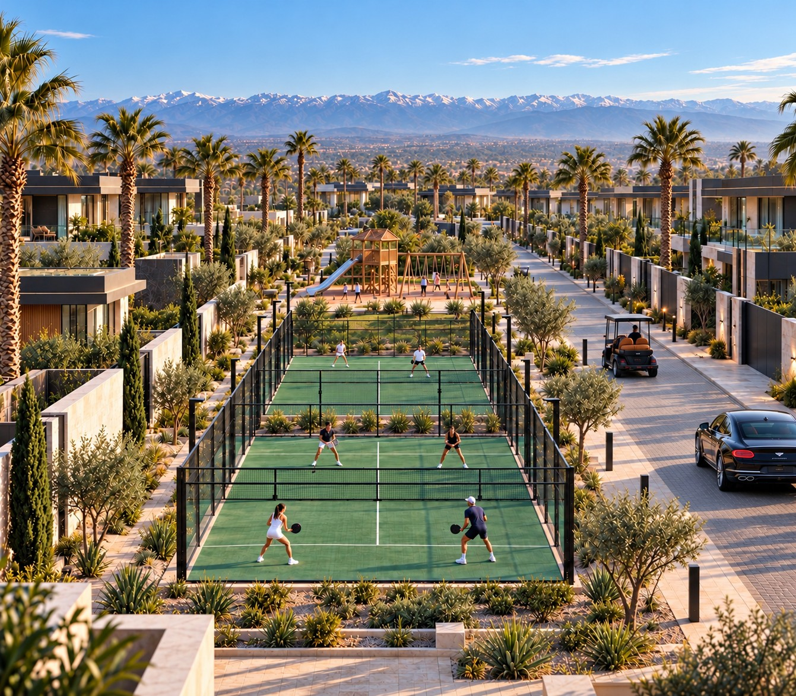
Twee banen liggen achter elkaar in de lengte. In het verlengde ervan, op dezelfde as, vervolledigt het grote kinderpark deze recreatiezone.
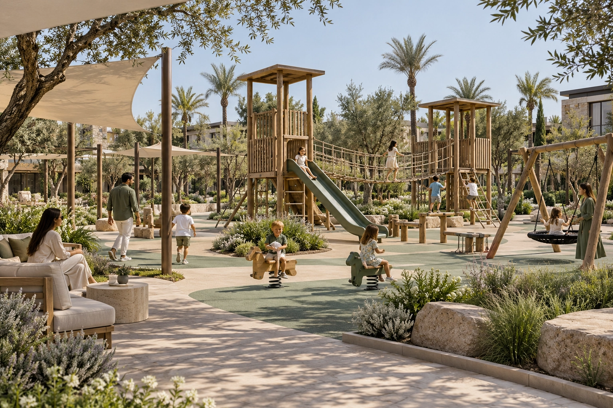
Direct in het verlengde van de twee padelbanen ligt het aangelegde kinderpark met glijbanen, schommels en speeltoestellen.
De beelden op deze website worden ter illustratie getoond en zijn niet-contractueel.
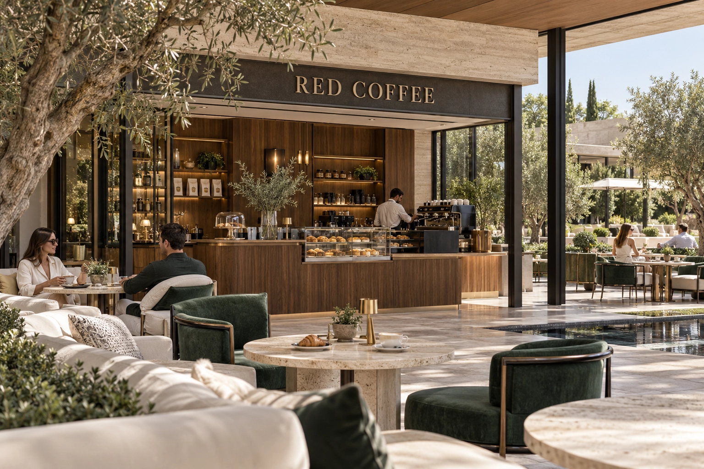
Een café in het hart van het domein om samen te komen, te pauzeren en gesprekken voort te zetten.
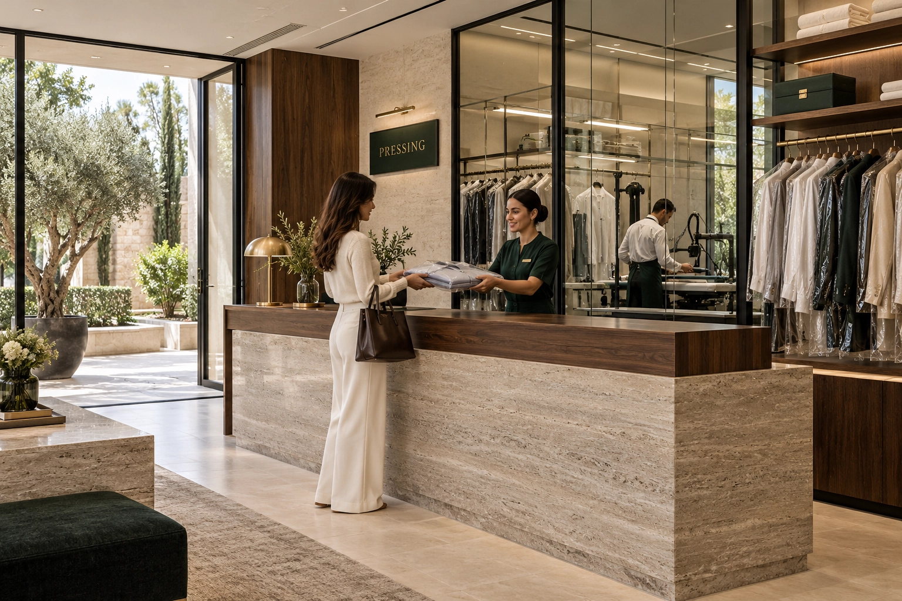
Een dienst dichtbij voor de verzorging van uw kleding en een gemakkelijker dagelijks leven.
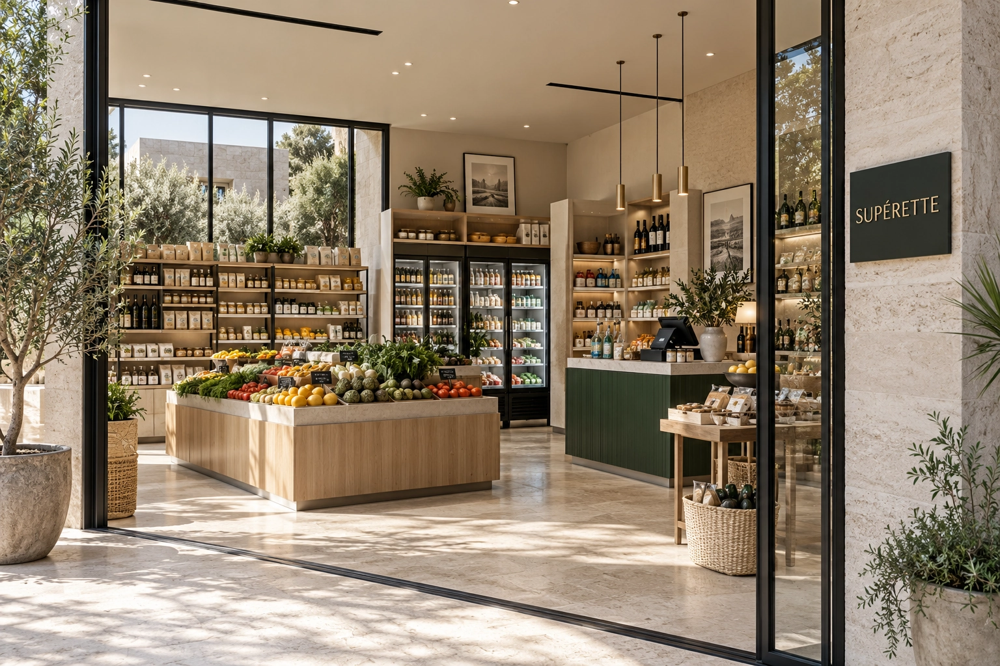
Dagelijkse benodigdheden op loopafstand, in een kleinschalige winkel.
De beelden op deze website worden ter illustratie getoond en zijn niet-contractueel.
Verhuurbeheer van A tot Z, het hele jaar door, voor eigenaars die hun villa willen verhuren en zorgeloos van hun eigendom willen genieten.
Prognose op basis van 292 verhuurde nachten per jaar, ofwel 80% bezetting.
| Villa | Indicatief tarief per nacht | Geschatte brutojaaropbrengst |
|---|---|---|
| Chloé | € 700 | € 204.400 |
| Céline | € 900 | € 262.800 |
| Margaux | € 1.100 | € 321.200 |
Bruto-opbrengsten vóór beheerkosten, onderhoud, lasten en belastingen.
Geniet van uw eigendom. Wij zorgen voor de rest.
* Bezetting en rendement waargenomen bij onze twee verhuurde villa’s in Marrakech. Deze resultaten garanderen geen toekomstige prestaties van Domaine Red Stone. Tarieven variëren per seizoen en verblijfsduur. Indicatieve, niet-contractuele berekening.
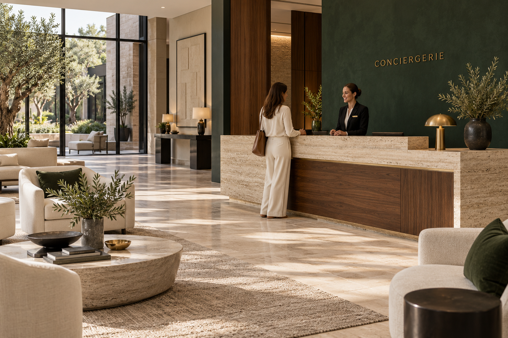
Een aanspreekpunt op het domein om bewoners te verwelkomen en te helpen. Voor eigenaars die hun villa willen verhuren, verzorgt de conciërgeservice het verhuurbeheer van A tot Z, het hele jaar door.
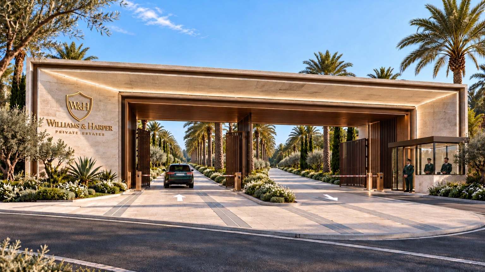
Permanente beveiliging en ontvangst bij de ingang van het domein voor een gerust gevoel.
De beelden op deze website worden ter illustratie getoond en zijn niet-contractueel.
Geplande ruimtes en diensten in Domaine Red Stone. Afbeeldingen zijn illustratief en niet contractueel.
Direct downloaden, zonder formulier.